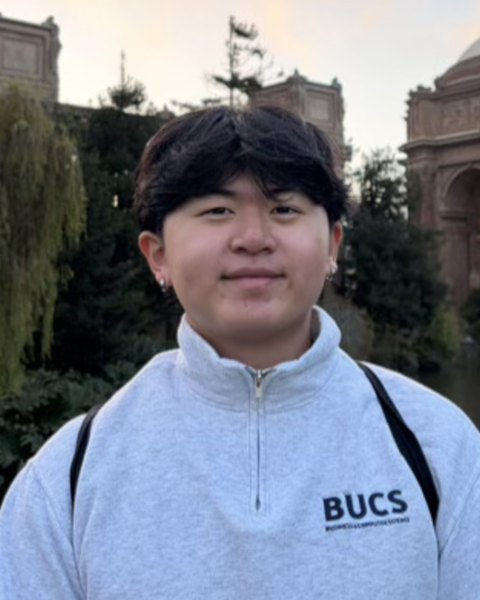
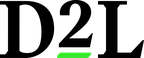

Software engineer building ML infrastructure and AI agents that run in production.
Most recently at Tesla on Maps and Navigation. I study computer science and business at UBC, with a 3.85 GPA, ranked 6th of 791 in Sauder, graduating November 2027. Open to software engineering internships and new-grad roles.
-
Tesla
Software engineer intern, Maps and NavigationBuilt an AI agent that matches navigation complaints on social media to fleet telemetry trips at 95% precision, ranking candidates across 100B+ rows per query.
-
Amazon
Software development engineer intern, Everyday EssentialsFirst engineer on a team of applied scientists. Built the ML inference pipeline that scores 15B+ product pairs behind $330M+ in annualized sales, and cut batch inference from 4 days to 8 hours.
-

D2L
Software engineer intern, Brightspace GenAIShipped GenAI features used by 400+ institutions, including AI Audio Overview, built end to end on Claude Sonnet, AWS Bedrock and Polly.
-
Absolute Security
Software engineer internBuilt telemetry security services for 1M+ enterprise Chromebooks, and a log export service that made error detection 30% faster.
BasketBot won ProduHacks out of 50 teams. It keeps score of a basketball game by watching the net with TensorFlow and OpenCV.
Works in Python, Java, C++, C#, TypeScript and SQL, with PyTorch, TensorFlow, AWS, Airflow, Docker and Kubernetes.